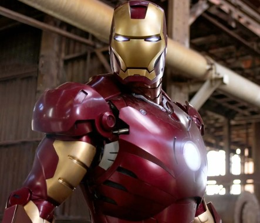
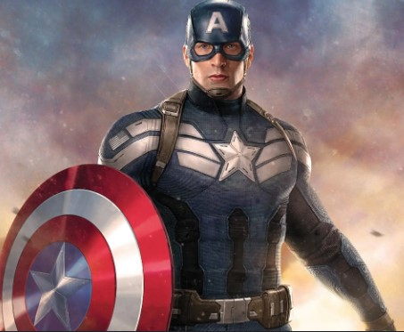
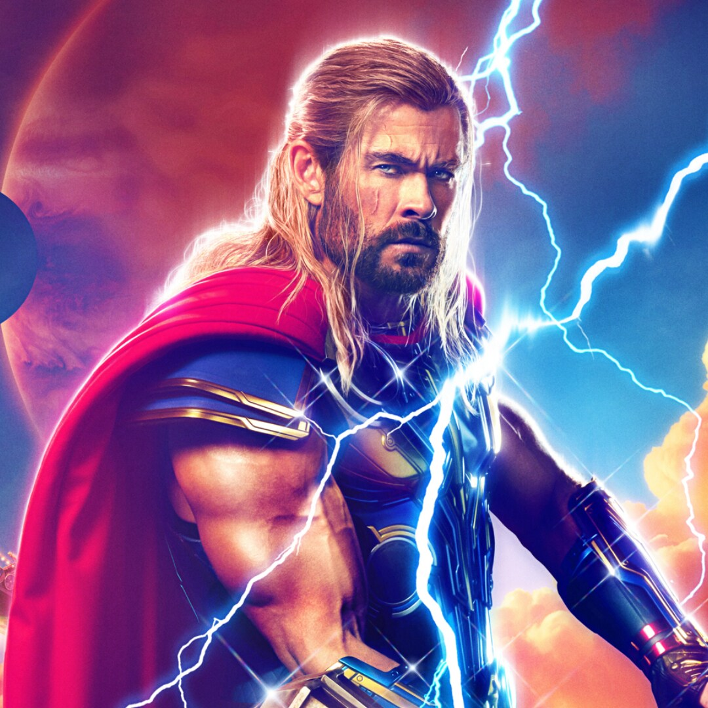

THE AVENGERS
Los Vengadores
Marvel's The Avengers (titulada The Avengers: Los Vengadores en Hispanoamérica y Los Vengadores en España), conocida como Marvel Avengers Assemble en el Reino Unido e Irlanda, o simplemente The Avengers, es una película de superhéroes estadounidense de 2012 basada en el equipo de superhéroes homónimo de Marvel Comics, producida por Marvel Studios y distribuida por Walt Disney Studios Motion Pictures, en colaboración con Paramount Pictures.
Es la sexta película del Universo cinematográfico de Marvel (UCM). La película fue escrita y dirigida por Joss Whedon, y cuenta con un reparto coral que incluye a Robert Downey Jr., Chris Evans, Mark Ruffalo, Chris Hemsworth, Scarlett Johansson y Jeremy Renner como el equipo titular, junto a Tom Hiddleston, Clark Gregg, Cobie Smulders, Stellan Skarsgård y Samuel L. Jackson. En The Avengers, Nick Fury, director de la agencia de espionaje S.H.I.E.L.D., recluta a Tony Stark, Steve Rogers, Bruce Banner, Thor, Natasha Romanoff y Clint Barton para formar un equipo que debe evitar que Loki, hermano de Thor, se apodere de la Tierra.El desarrollo de la película comenzó cuando Marvel Studios recibió un préstamo de Merrill Lynch en abril de 2005. Luego del éxito de la película Iron Man en mayo de 2008, Marvel anunció que The Avengers se estrenaría en julio de 2011. Con la incorporación de Johansson en marzo de 2009 y Renner en junio de 2010, la película atrasó su estreno a 2012. Whedon fue contratado en abril de 2010 y reescribió el guion original de Zak Penn. La producción comenzó en abril de 2011, en Albuquerque, Nuevo México, antes de trasladarse a Cleveland, Ohio, en agosto y a Nueva York en septiembre. La película fue convertida a 3D en posproducción.
Vivencias
Los Vengadores fueron un equipo compuesto por personas extraordinarias, individuos alterados u otras características especiales, que se encargaba de proteger la Tierra de las amenazas internacionales o alienígenas. Aunque principalmente estaban afiliados a los Estados Unidos, trabajaron teniendo en cuenta los intereses pacíficos del mundo en lugar de un país u organización en específico. Fueron reunidos por Nicholas Fury y S.H.I.E.L.D. a través de la Iniciativa Vengadores para que sean liderados por Steven Rogers y detengan la Invasión Chitauri de Loki, a quien vencieron en la Batalla de Nueva York, antes de tomar caminos separados. Después de que S.H.I.E.L.D. colapsara, Industrias Stark remodeló la Torre Stark y la convirtió en la Torre de los Vengadores, y el equipo se reunió para terminar la lucha contra HYDRA, que era dirigida por Wolfgang von Strucker. Una vez terminada la amenaza, Anthony Stark y Bruce Banner crearon a Ultrón con la intención de que este proteja el mundo por ellos, sin embargo, Ultrón les declaró la guerra e intentó extinguir a la humanidad, forzando a los Vengadores a crear a Visión, quien eliminó a Ultrón. Más adelante, el equipo ganó nuevos reclutas y se trasladó al Centro de los Nuevos Vengadores. Como los Vengadores eran catalogados responsables de los daños colaterales ocasionados en sus peleas, las Naciones Unidas crearon los Acuerdos de Sokovia para regular sus acciones. Las diferentes opiniones con respecto a este mismo hicieron que los Vengadores se dividan en dos equipos; uno a favor y otro en contra, dirigidos por Anthony Stark y Steven Rogers, respectivamente. Asimismo, Rogers defendió a James Barnes cuando este último fue inculpado de un ataque terrorista orquestado por Helmut Zemo, quien fue entregado a las autoridades, pero los Vengadores se separaron de todas formas, con Stark siendo el nuevo líder del equipo.
Más adelante, cuando Thanos comenzó la Guerra del Infinito, los Vengadores se dividieron en dos grupos; una facción viajó a Titán para aliarse con Stephen Strange y los Guardianes de la Galaxia con el objetivo de enfrentar a Thanos, y la segunda facción se trasladó a Wakanda para proteger a Visión de la  Orden Negra. No obstante, Thanos los venció a todos, completó el Guantelete del Infinito e hizo el Chasquido, eliminando a la mitad de la vida en el universo. Los Vengadores sobrevivientes emboscaron a Thanos en Titán II, donde lo eliminaron al descubrir que había destruido las Gemas del Infinito. Aunque algunos Vengadores se retiraron, Natalia Romanoff se quedó para dirigir al resto del equipo y a los nuevos reclutas. Cinco años después, los Vengadores se reagruparon tras ser visitados por Scott Lang, quien los convenció de viajar en el tiempo por medio del Reino Cuántico para reunir las Gemas del Infinito del pasado. Bajo el mando de Steven Rogers, los Vengadores tuvieron éxito en juntar las Gemas, aunque perdieron a Natalia Romanoff en el proceso. Bruce Banner hizo el Blip para deshacer los efectos del Chasquido, y recibieron la ayuda de numerosos aliados para enfrentar al ejército de Thanos de una línea de tiempo alternativa durante la Batalla de la Tierra, que consiguieron ganar, a costo del sacrificio de Anthony Stark. Después de esto, el equipo se disolvió oficialmente.
Siguenos en nuestras redes sociales y más